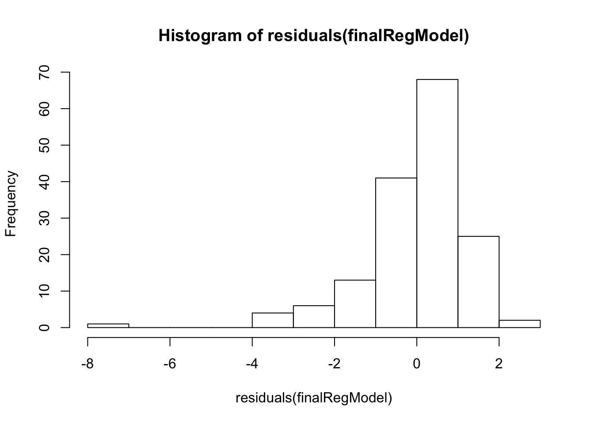
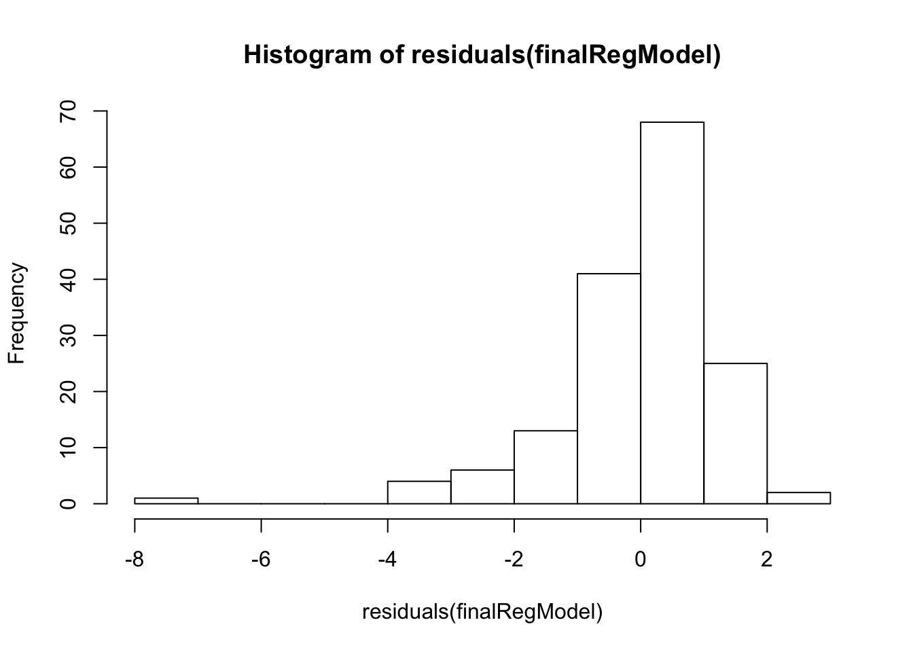
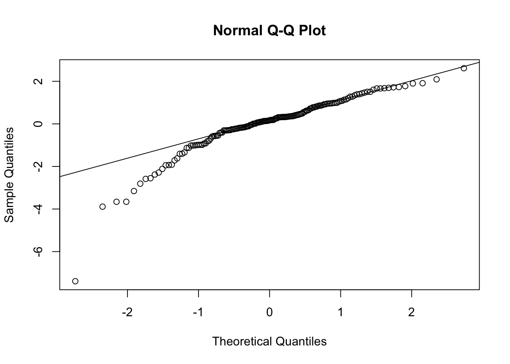

Advertising Data Analysis
Read the advertising.csv data and store it in AdData.
AdData <- read.csv("/Users/Shima/R_projects/advertising_data/advertising.csv", header = TRUE)
head(AdData)## TV radio newspaper sales
## 1 230.1 37.8 69.2 22.1
## 2 44.5 39.3 45.1 10.4
## 3 17.2 45.9 69.3 9.3
## 4 151.5 41.3 58.5 18.5
## 5 180.8 10.8 58.4 12.9
## 6 8.7 48.9 75.0 7.2Prints the column names of the dataset AdData:
names(AdData)## [1] "TV" "radio" "newspaper" "sales"Rearrange the columns so that sales becomes the first column in the data set:
col_order <- c("sales", "TV", "radio", "newspaper")
AdData <- AdData[,col_order]
head(AdData)## sales TV radio newspaper
## 1 22.1 230.1 37.8 69.2
## 2 10.4 44.5 39.3 45.1
## 3 9.3 17.2 45.9 69.3
## 4 18.5 151.5 41.3 58.5
## 5 12.9 180.8 10.8 58.4
## 6 7.2 8.7 48.9 75.0Automatically tests regression models that have only one single predictor variable using the following variable changes: sqrt(), variable to the square, or multiplication of two variables.
# new dataframe with the new predictor variables
# sales is the prediction (y variable)
# followed by square root / squared / multiplication of other variables
AdData2 <- data.frame ("Sales" = AdData$sales, "TV"=AdData$TV, "sqrtTV" = sqrt(AdData$TV), "TV^2"= (AdData$TV)^2, "TV*Radio" = (AdData$TV*AdData$radio),"TV*Paper" = (AdData$TV*AdData$newspaper), "Radio" = AdData$radio, "sqrtRadio" = sqrt(AdData$radio), "Radio^2" = (AdData$radio)^2, "Radio*Newspaper" = (AdData$radio * AdData$newspaper), "Newspaper" = AdData$newspaper, "sqrtNewspaper" = sqrt(AdData$newspaper), "Newspaper^2" = (AdData$newspaper)^2)
head(AdData2)## Sales TV sqrtTV TV.2 TV.Radio TV.Paper Radio sqrtRadio Radio.2
## 1 22.1 230.1 15.169047 52946.01 8697.78 15922.92 37.8 6.148170 1428.84
## 2 10.4 44.5 6.670832 1980.25 1748.85 2006.95 39.3 6.268971 1544.49
## 3 9.3 17.2 4.147288 295.84 789.48 1191.96 45.9 6.774954 2106.81
## 4 18.5 151.5 12.308534 22952.25 6256.95 8862.75 41.3 6.426508 1705.69
## 5 12.9 180.8 13.446189 32688.64 1952.64 10558.72 10.8 3.286335 116.64
## 6 7.2 8.7 2.949576 75.69 425.43 652.50 48.9 6.992853 2391.21
## Radio.Newspaper Newspaper sqrtNewspaper Newspaper.2
## 1 2615.76 69.2 8.318654 4788.64
## 2 1772.43 45.1 6.715653 2034.01
## 3 3180.87 69.3 8.324662 4802.49
## 4 2416.05 58.5 7.648529 3422.25
## 5 630.72 58.4 7.641989 3410.56
## 6 3667.50 75.0 8.660254 5625.00# testing and training sets
num_samples=dim(AdData2) [1]
sampling.rate = 0.8
training <- sample(1:num_samples,sampling.rate*num_samples,replace = FALSE)
trainingSet <- subset(AdData2[training,])
testing <- setdiff(1:num_samples,training)
testingSet <- subset(AdData2[testing,])
# automatic testing of regModels in for loop - picks the model with lowest mse
# min is initialized to a really big number for the first loop
min <- 1000000000000000
# loop through the new cols (new variables) - exclude sales so loop starts at 2
for(i in 2:(length(AdData2))) {
# current model (i)
regModel <- lm(Sales~get(names(AdData2[i])),data = trainingSet)
# error = sales predictions from current model (i) - actual sales predictions from testing set
error <- predict(regModel,testingSet,type="response") - testingSet$Sales
mse <- mean(error^2)
# check if we encountred a new min mse
if(mse<min) {
min <- mse
finalRegModel <- regModel
index <- i
}
}Identify the model with the best performance
paste("The model with best performance is based on the", names(AdData2[index]), "column with a mean squared error of:", min)## [1] "The model with best performance is based on the TV.Radio column with a mean squared error of: 1.81949686106092"summary(finalRegModel)##
## Call:
## lm(formula = Sales ~ get(names(AdData2[i])), data = trainingSet)
##
## Residuals:
## Min 1Q Median 3Q Max
## -7.2795 -0.4495 0.1969 0.8404 2.7185
##
## Coefficients:
## Estimate Std. Error t value Pr(>|t|)
## (Intercept) 8.838e+00 1.620e-01 54.56 <2e-16 ***
## get(names(AdData2[i])) 1.486e-03 3.266e-05 45.51 <2e-16 ***
## ---
## Signif. codes: 0 '***' 0.001 '**' 0.01 '*' 0.05 '.' 0.1 ' ' 1
##
## Residual standard error: 1.403 on 158 degrees of freedom
## Multiple R-squared: 0.9291, Adjusted R-squared: 0.9287
## F-statistic: 2071 on 1 and 158 DF, p-value: < 2.2e-16For the model with the best performance, calculate the residuals and display them using a histogram.
plot(hist(residuals(finalRegModel)))  Use the residuals to also plot the normal probability plot that also shows the corresponding straight line. We can see that most of the errors are normlly distirbuted. Except the first bit where we see some of the errors are lower than the rest. This could be because we did not clean the data before running the model.
 Use the residuals to also plot the normal probability plot that also shows the corresponding straight line. We can see that most of the errors are normlly distirbuted. Except the first bit where we see some of the errors are lower than the rest. This could be because we did not clean the data before running the model.
qqnorm(residuals(finalRegModel))
qqline(residuals(finalRegModel)) Read the advertising_set2.csv data
AdSet <- read.csv("advertising_set2.csv", header = TRUE)
head(AdSet)## TV radio newspaper sales id
## 1 649.63 111.45 227.21 64.08 2
## 2 978.97 220.80 204.15 118.53 2
## 3 701.34 102.29 147.78 70.22 3
## 4 166.75 31.74 52.60 24.41 3
## 5 103.63 98.46 183.98 28.16 3
## 6 561.58 127.84 108.75 60.44 3Create a decision tree model to predict Sales
# load library
library(rpart)
# create decision tree model based on sales
decTreeModel <- rpart(sales~.-id, data=AdSet)
plot(decTreeModel, margin=0.1)
text(decTreeModel)# prune tree at 0.016
plotcp(decTreeModel) pruned_decTreeModel = prune(decTreeModel,cp=0.016)
plot(pruned_decTreeModel,margin = 0.01)
text(pruned_decTreeModel)
plotcp(decTreeModel)  Create a linear regression model (do not create non-linear models)
Create a linear regression model (do not create non-linear models)
linRegModel <- lm(sales~.-id,data=AdSet)
summary(linRegModel)##
## Call:
## lm(formula = sales ~ . - id, data = AdSet)
##
## Residuals:
## Min 1Q Median 3Q Max
## -41.721 -3.156 -2.200 3.612 28.795
##
## Coefficients:
## Estimate Std. Error t value Pr(>|t|)
## (Intercept) 2.8640961 0.4877766 5.872 7.17e-09 ***
## TV 0.0515923 0.0008661 59.566 < 2e-16 ***
## radio 0.2177832 0.0060108 36.232 < 2e-16 ***
## newspaper 0.0149192 0.0041557 3.590 0.000358 ***
## ---
## Signif. codes: 0 '***' 0.001 '**' 0.01 '*' 0.05 '.' 0.1 ' ' 1
##
## Residual standard error: 8.181 on 596 degrees of freedom
## Multiple R-squared: 0.9536, Adjusted R-squared: 0.9533
## F-statistic: 4079 on 3 and 596 DF, p-value: < 2.2e-16The equation of the regression function f(x) is as follows:
b0 is the intecept, and the coefficients b1,b2,b3 can be multipled by the amount of TV, radio, and newspaper x1,x2,x3 respectively.
Equation = b0 + b1(x1) + b2(x2) + b3(x3)
Equation = 2.8640961 + 0.0515923(x1) + 0.2177832(x2) + 0.0149192(x3)
(where x1, x2, x3 represent the amounts of TV, radio and newspaper respectively)
# intecept
b0 <- 2.8640961
# TV
b1 <- 0.0515923
# radio
b2 <- 0.2177832
# newspaper
b3 <- 0.0149192Evaluate both models and recommend a model that can be used for predictions.
# create testing / training datasets
num_samples = dim(AdSet)[1]
sampling.rate = 0.8
training<-sample(1:num_samples,sampling.rate*num_samples,replace = TRUE)
trainingset <- subset(AdSet[training,])
testing <- setdiff(1:num_samples,training)
testingset <- subset(AdSet[testing,])
# create regression model
regModel <- lm(sales~.-id, data=trainingset)
# predict sales using regression model
regModelPrediction <- predict(regModel,testingset)
# evaluate regression model
regModelError = regModelPrediction-testingset$sales
regModelMSE = mean(regModelError^2)
# creating decision tree model again (same as above)
decTreeModel <- rpart(sales~.-id, data=AdSet)
plot(decTreeModel, margin=0.1)
text(decTreeModel)
# prune tree at 0.016
plotcp(decTreeModel) pruned_decTreeModel = prune(decTreeModel,cp=0.016)
plot(pruned_decTreeModel,margin = 0.01)
text(pruned_decTreeModel)plotcp(decTreeModel) 
# predict sales using dec tree model
decTreeModelPrediction <- predict(pruned_decTreeModel,testingset)
decTreeModelError = decTreeModelPrediction - testingset$sales
decTreeModelMSE = mean(decTreeModelError^2)
if (regModelMSE>decTreeModelMSE){
paste("Decision Tree Model is reccomended due to a lower mean squared error of", regModelMSE)
} else {
paste("Regression Model is reccomended due to a lower mean squared error of", decTreeModelMSE )
}## [1] "Regression Model is reccomended due to a lower mean squared error of 128.347456681621"Regression Models
Advantages
- Even when a linear regression model does not fit the data exactly, we can use it to find the nature of the relationship between the two variables.
Disadvantages
- A linear regression model works under the assumption that there is a straight-line relationship between vaiables in the linear regression model. This could be incorrect at times, leading to the model becoming significantly influenced by outliners and anomalies in the data.
Decision Tree Models
Advantages
- Decision tree models do not require data normalization / scaling.
- Missing values in data of decision tree models do not affect the outcome of the model.
Disadvantages
- Because data gets fragmented by each split in a decision tree model, the model created at each split will potentially introduce bias into the overall result.
- Decision tree models have a higher probability of overfitting.